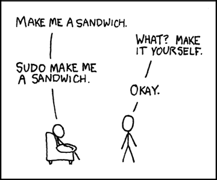

C0 Systèmes
"I'm doing a (free) operating system (just a hobby, won't be big and
professional like gnu) (...)"
(comp.os.minix newsgroup 1991)
Cours
Attention
Ce diaporama ne vous donne que quelques points de repères lors de vos révisions. Il devrait être complété par la relecture attentive de vos propres notes de cours et par une révision approfondie des exercices.
Travaux dirigés
Travaux pratiques
 Exercice 1 : Les bases de la ligne de commande
Exercice 1 : Les bases de la ligne de commande
- En utilisant uniquement la ligne de commande, créer l'arborescence suivante dans votre répertoire personnel :
graph TD A[MP2I] --> B[C1-Systèmes] A[MP2I] --> G[C2-OCaml] A[MP2I] --> F[C3-Arithmétique] B --> C[Cours] B --> D[TD] B --> E[TP] - Renommer le dossier
C2-OCamlenC2-LangageC - Aller dans le dossier
MP2I - Taper la commande
tree, quel est l'effet de cette commande ? - Quelle option de la commande
treepermet de limiter le niveau d’arborescence souhaité ?
Exercice 2 : Calendrier
- Ouvrir un terminal et y tester la commande
cal - Lire la documentation de cette commande
- Quel était le jour de la semaine le 26 juin 1815 ?
- Quel commande faut-il écrire pour afficher le calendrier du mois de mai 1970 ?
Exercice 3 : Chercher des fichiers
- Lire les premières lignes de la documentation de la commande
find. A quoi sert cette commande ? -
Tester la commande
find ~ -name .*. Expliquer le résultat obtenu et l'effet de la commande.Aide
On rappelle que
~désigne votre répertoire personnel. -
Sachant que les commandes du système se trouvent dans le repertoire
/usr/bin, lister toutes les commandes dont le nom se terminent pardir(rmdiretmkdirdevraient donc apparaître). -
Alice est certaine d'avoir un fichier nommé
bob.txtdans son répertoire personnel mais elle n'arrive plus à le retrouver. Quelle commande devrait-elle taper ? -
Expliquer le but de la commande
find ~ -mtime 5 -name *.txt
Exercice 4 : Gameshell
Gameshell est un mini-jeu d'aventure dans le terminal dans lequel les commandes servent à accomplir des missions. Il a été developpé par Pierre Hyvernat et Rodolphe Lepigre.
- Lancer un terminal (le raccourci clavier est Ctrl+Alt+T)
- Créer un dossier
gameshelldans votre répertoire personnel - Aller dans le répertoire
gameshell -
Y copier le fichier
gameshell.shtéléchargeable ci-dessous : Télécharger gameshell -
Ajouter le droit d'exécution pour l'utilisateur sur le fichier
gameshell.sh. -
Dans le terminal taper
./gameshell.shA retenir
On retiendra que pour lancer un exécutable depuis le terminal, on donne son chemin. Ici puisqu'il se trouve dans le répertoire courant (c'est à dire
.) on tape donc./gameshellAide
Voici les principales commandes du jeu :
gsh goal: affiche l'objectif de la missiongsh check: vérifie que l'objectif est atteint et le cas échéant passe à la mission suivantegsh reset: réinitialise la mission en coursgsh exit: quitter le jeu
Pour relancer le jeu à partir de la dernière sauvegarde taper
./gameshell-save.sh
Exercice 5 : The command line murders
Dans ce mini jeu (crée par Noah Veltman), vous devez résoudre une enquête policière en utilisant uniquement la ligne de commande. Pour jouer :
- Commencer par télécharger l'archive zip du jeu
- Décompresser cette archive dans le répertoire de votre choix, et aller dans le répertoire
clmystery-master - Taper
cat instructionspour demarrer
Aide
Toutes les commandes utiles pour résoudre l'enquête sont expliquées dans le fichier cheatsheet.pdf
Lien
En ligne (donc sans aucune installation sur son ordinateur personnel), on peut aussi jouer à Terminus pour découvrir la ligne de commande
Humour d'informaticien
